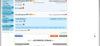
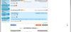
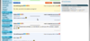
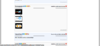
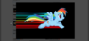
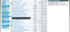
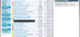

JVCMaster
JVCMaster est une extension navigateur compatible avec Google Chrome 21+, Chromium 18+, Mozilla Firefox 14+, Opera 12+, ajoutant des fonctionnalités aux forums de Jeuxvideo.com et aux ForumJV.
Cliquez sur "JVCMaster X.X.X" en haut à droite de la page, juste à côté de votre pseudo. Un panneau de gestion d'extensions s'ouvre, activez ou non des fonctionnalités d'un simple clic!
Maintenant, vous pouvez :
{kind=link}
- Afficher des informations d'un pseudo à côté de celui-ci (sexe, rang)
- Afficher la CDV du pseudo dans une lightbox, lors du clic sur celui-ci
- Afficher les images de NoelShack dans une lightbox
- Augmenter votre vitesse de navigation
- Cacher les posts des bots (flood)
- Citer un ou des post(s)
- Cacher un ou des posts, et les posts d'un pseudo
- Reperer plus facilement les posts "permaliens"
- Sauvegarder vos topics préférés!
Les screens présent sur le site correspondent à la version 2.5.6 de JVCMaster. Les screens c'est brise-burnes à prendre et à travailler, donc je laisse ces putains de screens.
Extensions disponibles
Des infos sur un pseudo?
Soyez informé du sexe et du rang d'un pseudo par un simple coup d'oeil
![[IMAGE : On peut remarquer qu'ici, il y a une fille de rang Rubis, et des garçons de rang Or, Argent, et encore Rubis]](img/extensions/cdvinformation.png)
Vous voulez citer un post?
Un bouton vous facilite la tâche! Enfin une manière propre pour citer un post!
![[IMAGE : Un bouton pour citer!]](img/extensions/citation1.png)
![[IMAGE : Les smileys, les liens, et les aperçus Noelshack sont convertis en texte]](img/extensions/citation2.png) 
 Marre des bots?
Les spams des bots sont automatiquement détecté et caché
![[IMAGE : L'antibot en action]](img/extensions/antibot.png)
Une transition plus classe pour un visionnage de CDV?
Cliquez sur le pseudo, et sa CDV s'ouvrira dans une Lightbox
![[IMAGE : Un clic sur un pseudo]](img/extensions/showcdv1.png)
![[IMAGE : Et ça s'ouvre!]](img/extensions/showcdv2.png)
Perdu lors d'un clic sur un permalien et que vous naviguez ensuite?
Le post permalien est maintenant surligné pour faciliter votre navigation!
Marre du nouveau NoelShack? Vous ne le verrez plus!
Cliquez sur un lien ou une miniature NoelShack, et l'image s'ouvre dans une Lightbox
 Flemme de rechercher dans le forum ou dans vos favoris de navigateur?
Gérer facilement vos topics favoris en 2 clics!
![[IMAGE : Cliquez simplement sur le coeur vert à côté du titre du topic]](img/extensions/topicfavorites1.png)
![[IMAGE : Le topic apparait dans la box à droite]](img/extensions/topicfavorites2.png)
Un post, ou un pseudo que vous n'aimez pas?
Avec 2 boutons, cachez simplement un post, ou tout les posts d'un pseudo
![[IMAGE : Vous voulez cacher un post?]](img/extensions/hidepost1.png)
![[IMAGE : Ce post est maintenant caché]](img/extensions/hidepost2.png)
![[IMAGE : Vous voulez cachez tous les posts de ce pseudo?]](img/extensions/hidepost3.png)
![[IMAGE : Ses posts sont maintenant cachés]](img/extensions/hidepost4.png)
Vous êtes vraiment feignant?
JVCMaster vous rajoute des raccourcis, bande de feignasses. 
![[IMAGE : Redirection à la dernière page du topic]](img/extensions/shortcuts1.png) 
 Envie de me faire un don?
Depuis sa création, JVCMaster représente des jours, des semaines de travail, ça serait cool un petit don. 
Remerciements
- [Baptross] pour ces quelques idées.

- Azurill pour avoir fait le SAV quand je ne pouvais pas le faire.
- Chocolayte parce que je t'aime bien.
- IngenieurDuSon pour ses idées, et également sa présence sur le topic.
- Meebo car malgré la concurrence entre JVCMaster et son extension navigateur JVPlus, il n'est pas venu faire sa pub sur le topic de JVCMaster (C'est un type bien ).
- Naptu pour sa présence sur le topic, et aussi ses idées.
- Riven_Arrow2 pour avoir dit qu'une version 3 de JVCMaster allait voir le jour.
- Staino pour son immense présence sur le topic, et m'avoir comparé à un Dieu
- Tapsibaba pour avoir pris l'initiative de faire des screens de JVCMaster 3, mais que malheureusement, ces screens n'entraient pas dans mes critères
- TitouCapV2
 pour ses magnifiques dédicaces, même si elle a écorché mon pseudo.
pour ses magnifiques dédicaces, même si elle a écorché mon pseudo. - VincentBrooks pour avoir été très présent sur le topic.
- Et bien sûr, sans oublier les centaines de personnes dont je n'ai pas pu citer le pseudo ici, qui ont sans cesse, amélioré JVCMaster. Je vous aime TOUS!
{kind=link}
{kind=link}
{kind=link}